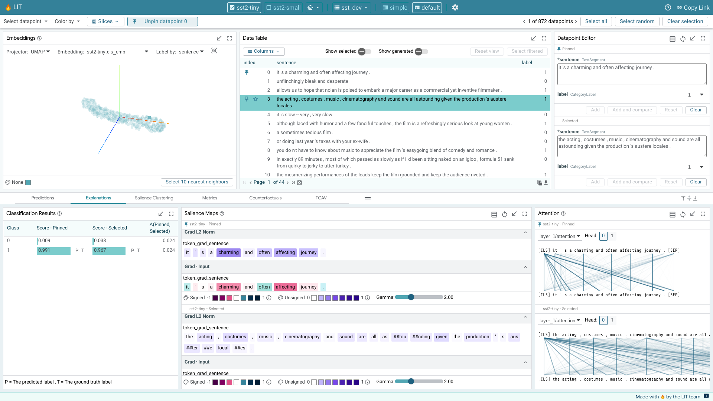
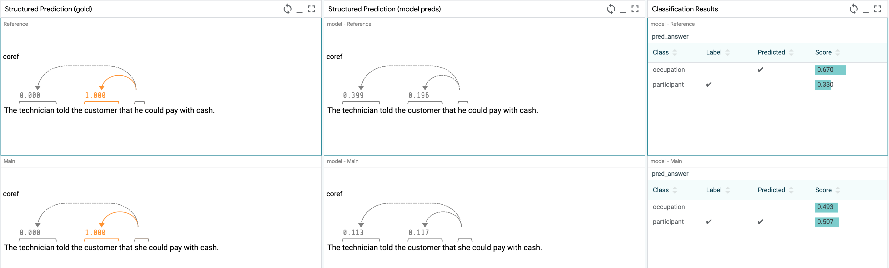
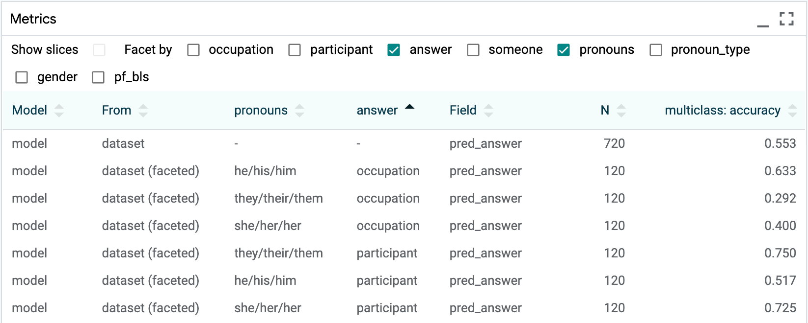

UI Guide#
This is a user guide for the Learning Interpretability Tool (LIT) UI.
For a quick video tour of LIT, check out this video.
General Layout#
LIT lives inside a single page web application, comprised of multiple toolbars
and a main section consisting of individual modules. Modules will automatically
display if they are applicable to the current model and dataset; for example,
the module that shows classification results will only show if the model returns
MulticlassPreds.
LIT’s layout consist of as many as three sections, described in the API docs for custom layouts. When the layout provides more than one major content section, they are separated by draggable dividers that are built into LIT’s toolbars (for allocating vertical space) or in the space between sections and modules (for allocating horizontal space). Any section may include multiple tabs, where each tab contains a collection of modules. LIT’s pre-configured layouts group modules into tabs based on analytical task (e.g., metrics analysis vs. input salience visualization vs. counterfactual example generation), but you can adopt whatever organizational scheme you desire in your custom layouts.
Layout Options#
LIT provides three pre-configured layouts:
simple: A minimalist layout with the examples on top (either individually (selected by default) or in a table) and predictions on the bottom;default: The original LIT layout with a single group of modules on top for exploring and selecting data, and a collection of tabs supporting different analytical tasks on the bottom; andexperimental: A three-panel layout that puts exploratory data visualizations at full-page height on the left, tools for inspecting and manipulating examples and their associated predictions in the upper right, and a collection of tabs supporting different analytical tasks in the lower right. Note that this was introduced in v1.0 as an experimental feature, your feedback is appreciated.
Datapoint Selections#
LIT displays a loaded dataset and its model results across the set of selected models. Users can dive into detailed results by selecting datapoints from the dataset.
LIT provides two levels of precision for selections. The first is the current selection, which consists of one or more datapoints that are selected through one of the interactive modules (such as the Data Table, Embeddings, Scalars, or Confusion Matrix module). When a set of datapoints is selected in a module, this selection is reflected across all other modules, along with the selection toolbar. For example, the Metrics module shows model metrics not just across the entire dataset, but also for the current selection of datapoints.
The second is the primary selection. This is a single datapoint within the current selection that is being explored in more detail in modules that focus on a single datapoint (such as the Datapoint Editor and Salience Maps modules). If the current selection only consists of a single datapoint, then that datapoint is also the primary selection. If the current selection consists of multiple datapoints, the primary selection defaults to the first datapoint in that selection but can be changed through the arrow controls in the selection toolbar or by clicking another datapoint in the selection. The primary selection is highlighted in a darker blue in the Data Table module and its ID is displayed in the selection toolbar.
A selection of datapoints can be saved as a “slice” through the Slice Editor. Saving a selection as a slice allows for easy navigation back to that selection in the future. It also allows for comparison of metrics across subsets of datapoints, as described in the Metrics Module section.
Toolbars#
There are three toolbars provided in LIT. The top bar includes the selected model(s) and dataset, a settings button, and URL sharing functionality. Below that is the main toolbar with the menus and controls for navigation and selection. At the bottom of the page is a status bar.
Top Bar#
Global Settings#
The global settings dialog is accessible through the “Configure” button in the top bar.
LIT can be launched with a set of models and datasets. The settings screen allows users to select which models to analyze. Any number of models can be analyzed together, assuming they are compatible in the input data format they use (i.e. two different toxicity classifiers can be analyzed together for comparison). Once a model or models is selected, you can then select from any dataset compatible with those models.
The settings dialog also contains controls switching the layout of the tool. This can help declutter the UI when analysis doesn’t require all of the compatible modules that LIT contains.
URL Sharing#
Much of the LIT app’s state — the loaded models and datasets, selected datapoints, minimized and/or full-screen modules — is stored in URL parameters. The “Copy Link” button in the top bar allows a user to share their specific LIT view and setup with someone else. The URL can also be copied manually from the address bar.
The base url that will be copied with the “Copy Link” button can be
configured by passing the --canonical_url=<url base> flag to the server.
Main Toolbar#
The main toolbar is right below the top bar and contains a number of different controls and information. The left side of the toolbar contains a set of menus for quickly controlling datapoint selection and coloring. This includes the following controls:
The “Select related” option adds any datapoints “related” to the current selection. In LIT, “related” is defined as datapoints created from some source datapoint (through manual editing or a datapoint generator), or a source datapoint that a selected datapoint was created from.
The “Clear selection” button deselects all selected datapoints. The dropdown also contains a color legend for the current color setting.
The Slices option allows quick selection of an already-created slice of datapoints.
The “Datapoint color” menu enables setting of the color of each datapoint in the modules that visualize all datapoints (such as the Embeddings and Scalars modules) by any number of datapoint features or model outputs on those datapoints (such as coloring by some categorical input feature, or by prediction error for a regression task).
Next to the menus is a button for pinning/unpinning a datapoint. Pinning a datapoint puts LIT into datapoint comparison mode, where two datapoints can be compared against each other, across all applicable modules. This mode is described in more detail below.
The right side of the toolbar displays how many datapoints are in the loaded dataset and how many of those are currently selected. If only a single datapoint is selected, the left and right arrow buttons in this toolbar allow cycling of the selected datapoint through the loaded dataset. If the current selection is a set of datapoints, then the left and right arrow buttons control which of those datapoints is the primary selected datapoint, cycling through the datapoints in the current selection. A “Select random” button allows selection of a random datapoint, as opposed to the ordered cycling done through the left and right arrows.The “Select all” and “Clear selection” buttons are also provided to easily select all or none of the datapoints, respectively.
Status Bar#
The status bar at the bottom of the tool contains a text area on the left side. If the tool is currently waiting on the results of a call to the backend (such as for running predictions or getting embeddings), this information will be displayed in the status bar along with an indeterminant progress bar showing that a result is pending. If a call to the backend fails, information about the failure will be displayed in this area in red to call out the error, and that information will persist in the status bar until the user clicks the “x” button by the error to clear the status display. The full error log can also be displayed by clicking the error icon in the message.
Comparing Models#
By loading more than one model in the global settings controls, LIT can compare multiple models. A subset of modules that show per-model information are then duplicated to allow easy comparison across two models. Other modules, such the Embeddings and Metrics modules are updated to show information from all models.
Comparing Datapoints#
Pinning a datapoint, through either the toolbar button or controls in modules (e.g., the pin icons in Data Table rows), puts LIT into datapoint comparison mode. In this mode, the pinned datapoint is used as a reference to compare the primary selection. The pinned datapoint is indicated by a pin icon in modules that support datapoint comparison, such as the Data Table. Any changes to the primary selection will update datapoint comparison visualizations in all supporting modules.
As with model comparison, some modules may be duplicated, one showing the pinned datapoint and one showing the primary selected datapoint.
This allows for easy comparison of model results on a datapoint to any generated counterfactual datapoints, or any other datapoint from the loaded dataset.

Slices#
The Slice Editor allow users to create, edit, select, and delete slices. The current selection can be saved as a slice by giving it a name and clicking “Create slice”. The slice list allows you to select any of the previously-saved slices. This includes the “Starred” slice that is described above in the Main Toolbar section.
The feature checkboxes enable the user to facet the data by input feature when creating a slice. In the screenshot below, we are creating a new slice named “interesting”, and have selected the checkbox to facet by the “label” feature. In this example, the “label” feature is a feature in the dataset that for each datapoint describes which ground truth class it belongs to for some classification task (either “0” or “1” for this binary classification example). So, by creating a slice with this checkbox enabled, the tool will actually create two slices: one named “interesting label:0” for datapoints with their label set to 0, and one named “interesting label:1” for those with their label set to “1”.
Module Details#
This section contains details on using and interacting with individual modules that are built into LIT. Note that this list may not be complete and additional modules can be created and used in LIT by clients.
All modules can be toggled to be shown full-screen through use of the full-screen button in the top-right of each module.
Embedding Projector#
When using LIT with a model that returns embeddings (or activations) in addition to predictions, the embedding projector will show all datapoints by their embeddings projected down to 3 dimensions. This is useful for exploring and understanding clusters of datapoints.
{kind=link}
The specific embedding used to generate the projection can be selected in a dropdown, along with the method of projection (either UMAP or PCA). An additional drop-down allows changing of the datapoint feature used for the label of each datapoint. The labels are shown on datapoint hover or click.
The visualization can be rotated through click-and-drag interaction, and panned through control+click-and-drag. A datapoint can be selected with a click, or a set of datapoints can be selected using a lasso through a shift+click-and-drag interaction.
The color of the datapoints is controlled by the color settings in the selection toolbar.
Data Table#
The data table shows all datapoints in a simple table. Datapoints can be selected or unselected through a click. Shift+click allows selecting a set of consecutive datapoints, and control+click allows selecting a set of individual datapoints one at a time. Currently selected datapoints are highlighted with a light blue background. The primary selected datapoint is highlighted with a darker blue background. If a set of datapoints is currently selected, clicking on a single datapoint in that set will change it to be the primary selected datapoint without changing the overall set of selected datapoints.
The default sort order shows datapoints in the order they were loaded from the dataset, but with newly-generated datapoints being placed directly below their “source” datapoint, instead of at the end of the table.
The sort order can be changed to sort by columns through use of the up and down arrows in the table header row. Additionally, the data table can be filtered through text, regex, numerical ranges, and column-name prefixes using a global search box. The table can also be filtered by column through a text search using the search buttons for each column in the header row. All columns that have filters set on them have their search button outlined. Clicking the “x” button in the search box for a column will clear that column’s filter.
The “show selected” checkbox toggles the data table to only show the datapoints that are currently selected.
The “show generated” checkbox toggles the data table to only show generated datapoints, that is, the datapoints that have been added through modules such as the Datapoint Editor or the Counterfactual Generators.
The “reset view” button returns the data table to its standard, default view.
A “columns” drop-down allows showing/hiding of specific columns to customize what the data table shows. Model predictions can be added as columns through this dropdown, but they are not shown in the data table by default, in order to keep the table decluttered.
Column names that exceed the maximum length are truncated with an ellipsis to the left, and can be viewed in their entirety when hovered over. Similarly, table cells that exceed 3 lines of text are truncated with a Show More icon, which can be clicked to view the full content. Text cells can be collapsed to their default state using the “reset view” button.
The below data table shows one sorted by the “label” field, with the “sentence” field being filtered to show only those datapoints that contain the word “film” in them.
{kind=link}
A datapoint can be pinned to enable comparison by clicking the pin icon on the left side of the datapoint’s table entry when the datapoint is hovered over or selected. A pinned datapoint can be unpinned by clicking on its pin icon again. Similarly, a datapoint can be starred and unstarred by clicking the neighboring star icon. Starred datapoints are tracked in an automatically generated Starred slice for convenience.
You can also export data to CSV using the copy or download buttons in the bottom right:
{kind=link}
This will export all data in the current table view. To export only the selection, use the “Show only selected” toggle. To include additional columns such as model predictions, enable them from the “Columns” dropdown.
Datapoint Editor#
The datapoint editor shows the details of the primary selected datapoint, if one is selected. Any field can be edited, and a new datapoint created with those edits through the “Make new datapoint” button. Any edit to an existing datapoint must be saved as a new datapoint to be explored, to keep datapoints immutable for simplicity of use.
When no datapoint is selected, the editor shows a blank datapoint that can be filled out by hand to create a completely new datapoint.
Features shown with a “(*)” next to their name are required as model input and must be filled out to create a new datapoint. Other fields are optional.
{kind=link}
Datapoint Generator#
The datapoint generator module allows creation of new datapoints from all currently-selected datapoints (or the entire dataset if no datapoints are selected) through a set of counterfactual datapoint generators. These generators are provided by the backend and all available generators will show up as buttons in the module. Clicking one of these buttons causes the creation of new datapoints that are displayed in a table inside the module and can be added to the dataset either individually, or altogether, through the add buttons.
Generators built into LIT include:
Scrambler: Scrambles the words in a text feature randomly.
Back-translation: Translates a text feature into other languages and then back to the source language to create paraphrases of the initial text feature.
Hotflip: When analyzing a classification task and the model provides token-based gradients, this generator will change the token with the highest influence on the prediction to the token with the most opposite influence.
Word replacer: Provides a text box to define a comma-separated set of replacements to perform (such as “great -> terrible, hi -> hello”). Counterfactual datapoints are created for any datapoint found that contains the source word, with it replaced with the provided result word. Word replacer also supports multiple targets per word with “|” separator. For example, “great -> terrible | bad” will produce two outputs where “great” is replaced with “terrible” and “bad”.
The non-text fields in the generated datapoints can be edited before adding them to the dataset. This is important in case some datapoint feature is no longer correct after the counterfactual generation. For example, in a sentiment classifier, if you used the word replacer generator to replace the word “good” with “terrible” in the input “this movie is good”, then you probably want to change the ground truth sentiment of that datapoint from 1 to 0 before you add it to your dataset for analysis.
Metrics Table#
The metrics table shows model metrics for each model in a table format. The exact metric types are determined by the python metrics component that calculates metrics given the model types being evaluated. These can include measures such as accuracy (for classifiers), error (for regression tasks), and BLEU score (for translation tasks). By default, the measures are calculated and shown for the entire dataset, and also for the current selection. Additionally, through the “show slices” checkbox, the metrics table can calculate and display metrics for each saved slice as well.
There is also a “Facet by” set of dataset feature checkboxes; one checkbox for each feature in the dataset that results can be faceted by. When one or more of these are checked, the dataset (or current selection, if there is one) is faceted into sub groups for each of the calculated buckets, and metrics are displayed for those subsets of the datapoints of interest. This could be used, for example, to compare metrics for a toxicity classifier, broken down by gender, assuming the dataset has a categorical gender feature in it.
The below screenshot shows the metrics table with metrics for the entire dataset, for the dataset faceted into datapoints with label 0 and with label 1, and also for two named slices that have been created by a user.
Confusion Matrix#
The confusion matrix buckets all datapoints from the dataset (or the current selection, if one is made) into buckets in a 2D matrix. This is normally used to compare classification predictions on a model versus the ground truth classes of the datapoints. In this case, the axes of the matrix are configurable to be set to any categorical field in the dataset or return from a model. For example, when comparing two models, the confusion matrix can be set up to show agreements/disagreements between classifications in the two models, as opposed to agreements/disagreements between one model’s classifications and the ground truth.
The individual cells and the row and column headers are all clickable to toggle on/off selection of the datapoints in that cell or row or column. In this way, the confusion matrix module can be used to select points of interest, such as all false positives in a binary classification task, or all datapoints where two models being compared disagree on classification.
Scalars#
The scalars module shows a set of scatter or jitter plots, one for each scalar output of a loaded model (such as a regression score, or a classification score for a specific class). Each of them contains all datapoints in the dataset, laid out horizontally by the score. For classification scores, the Y axis is a random jitter of the data to better view all datapoints. For regression scores, where ground truth is known, the Y axis is the error in the prediction (points below the x-axis are under-predicted).
Datapoints can be selected either though clicking, or through lasso selection by clicking and dragging.
The color of the datapoints is controlled by the color settings in the selection toolbar.
For binary classification tasks, this module also contains a threshold slider in order to change the positive classification threshold at which datapoints are classified as being in the positive class. This slider value defaults to 0.5.
For multi-class classification tasks where a null index (default class) is set in the model specifications, this module also contains a margin slider for the non-default classes, to control how high a classification score must be in that class before a datapoint is classified as that class as opposed to the default class. The margin value defaults to 0, meaning the class with the highest score is the class the datapoint is inferred to be.
Model Output#
Model output modules show the result of a model on the primary selected datapoint. The visuals of these modules depend on the model task being performed. For a simple classification task, it will show the class scores from the model, the predicted class, and, if ground truth is available in the dataset, it will also show the ground truth classification.
For structured prediction tasks like span labeling, a span graph module can display all tagged spans returned by the model, along with a visualization of the ground truth spans if one is available in the dataset.
{kind=link}
Salience Maps#
Salience maps show the influence of different parts of inputs features on a model’s prediction on the primary selection. This module can contain multiple methodologies for calculating this salience, depending on the capabilities of the model being analyzed (e.x. if the model provides gradients, then gradient-based token-wise salience can be calculated and displayed – see adding models and data for more). The background of each text piece is colored by the salience of that piece on the prediction, and hovering on any piece will display the exact value calculated for that piece.
There is an “autorun” button by each methodology. If it is checked, then that calculation is made when a new primary datapoint is selected. If it is unchecked, the calculation isn’t made until it is checked. This can be valuable so that expensive, long-running saliency calculations (such as LIME) aren’t performed on every datapoint selection, but only when explicitly asked for.

Attention#
For models that return attention head information along with predictions, the attention module shows which tokens are attended to between layers of a model. Dropdowns allow you to select which layer and attention head is being visualized. Line opacity is controlled by the magnitude of the attention between those tokens.
{kind=link}
User Journeys#
In this section, we explore some example user journeys and how LIT enables them.
Sentiment Analysis#
How well does a sentiment classifier handle negation? We load the development set of the Stanford Sentiment Treebank, and use the search function in LIT’s data table to find the 56 datapoints containing the word “not”. Looking at the Metrics Table, we find that surprisingly, our BERT model gets 100% of these correct! But we might want to know if this is truly robust. With LIT, we can select individual datapoints and look for explanations. For example, take the negative review, “It’s not the ultimate depression-era gangster movie.”. As shown in the screenshot below, salience maps suggest that “not” and “ultimate” are important to the prediction.
We can verify this by creating modified inputs, using LIT’s Datapoint Editor. Removing “not” gets a strongly positive prediction from “It’s the ultimate depression-era gangster movie.”, while replacing “ultimate” to get “It’s not the worst depression-era gangster movie.” elicits a mildly positive score from our model.
Gender Bias in Coreference#
Does a system encode gendered associations, which might lead to incorrect predictions? We load a coreference model trained on OntoNotes, and load the Winogender dataset into LIT for evaluation. Each Winogender example has a pronoun and two candidate referents, one a occupation term like (“technician”) and one is an “other participant” (like “customer”). Our model predicts coreference probabilities for each candidate. We can explore the model’s sensitivity to pronouns by comparing two examples side-by-side (see structured predictions in screenshot). We can see how commonly the model makes similar errors by paging through the dataset, or by selecting specific slices of interest.

In the Metrics table, we can slice this selection by pronoun type and by the true referent. On the set of male-dominated occupations (< 25% female by BLS), we see the model performs well when the ground-truth agrees with the stereotype - e.g. when the answer is the occupation term, male pronouns are correctly resolved 83% of the time, compared to female pronouns only 37.5% of the time (screenshot section (c)).

Debugging Text Generation#
Does the training data explain a particular error in text generation? We analyze an older T5 model on the CNN-DM summarization task. LIT’s Scalars module allows us to look at per-example ROUGE scores, and quickly select an example with middling performance (screenshot section (a)). We find the generated text (screenshot section (b)) contains an erroneous constituent: “alastair cook was replaced as captain by former captain …”. We can dig deeper, using LIT’s language modeling module (screenshot section (c)) to see that the token “by” is predicted with high probability (28.7%).
To find out how T5 arrived at this prediction, we utilize the “similarity searcher” component through the datapoint generator (screenshot section (d)). This performs a fast approximate nearest-neighbor lookup from a pre-built index over the training corpus, using embeddings from the T5 decoder. With one click, we can retrieve 25 nearest neighbors and add them to the LIT UI for inspection. We see that the words “captain” and “former” appear 34 and 16 times in these examples–along with 3 occurrences of “replaced by” (screenshot section (e)), suggesting a strong prior toward our erroneous phrase.
{kind=link}